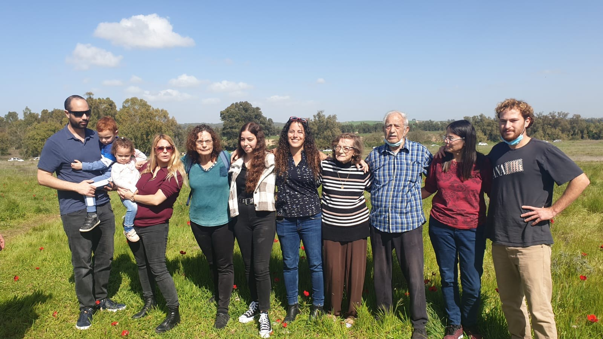
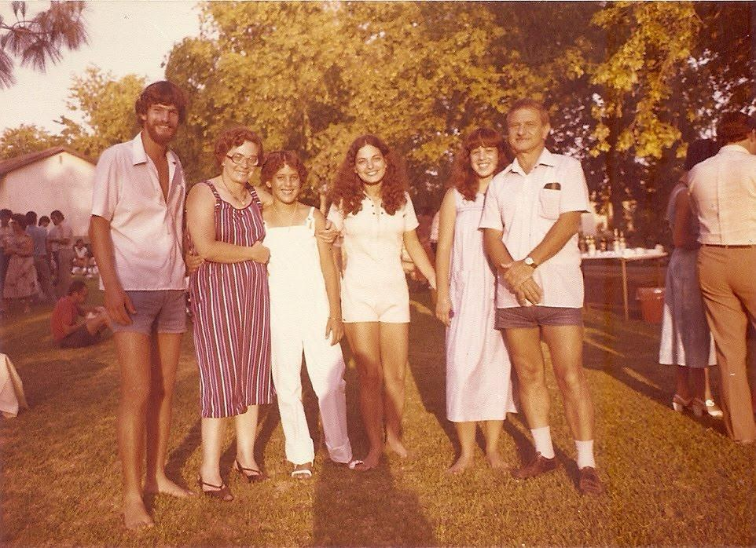

אודותיהם
שותפים לחיים. חברים קרובים. בית אחד.
סוניה הביאה איתה חום, רוך ונתינה. אמיר הביא סקרנות, ערכים, שירים וסיפורים. יחד הם יצרו בית שהיה מלא באהבה, משפחה, אירוח, הומור ותחושת שייכות.

לזכרם האהוב
אהבה, משפחה ומורשת שנשארת
שני אנשים, אהבה אחת יוצאת דופן. הם בנו חיים של חסד, צחוק, שקט פנימי ונתינה — והסיפור שלהם ממשיך בלב כל מי שהכיר אותם.
לא נעלמו,
רק מעבר למבט.
תמיד בלב.
אהבה שהשאירה חותם
״הדבר הטוב ביותר להיאחז בו בחיים הוא זה בזה.״
אודותיהם
סוניה הביאה איתה חום, רוך ונתינה. אמיר הביא סקרנות, ערכים, שירים וסיפורים. יחד הם יצרו בית שהיה מלא באהבה, משפחה, אירוח, הומור ותחושת שייכות.
פרק 02





פרק 03
שני מסלולים שהתחברו לסיפור אחד.
חברות, משפחה וברכות סביב התחלה חדשה.
בית של אהבה, ערכים ואירוח אין־סופי.
משפחה מלוכדת, ילדים ונכדים אהובים.
שירים, סיפורים ורוח צעירה שנשארה תמיד.
אהבה שממשיכה להאיר דורות.
פרק 04
״הבית שלהם היה מקום של חום, אהבה וביטחון.״— המשפחה
״החוכמה, השירים והסיפורים של אמיר ילוו אותנו תמיד.״— לזכרו
״סוניה ידעה לגרום לכל אחד להרגיש אהוב ורצוי.״— לזכרה